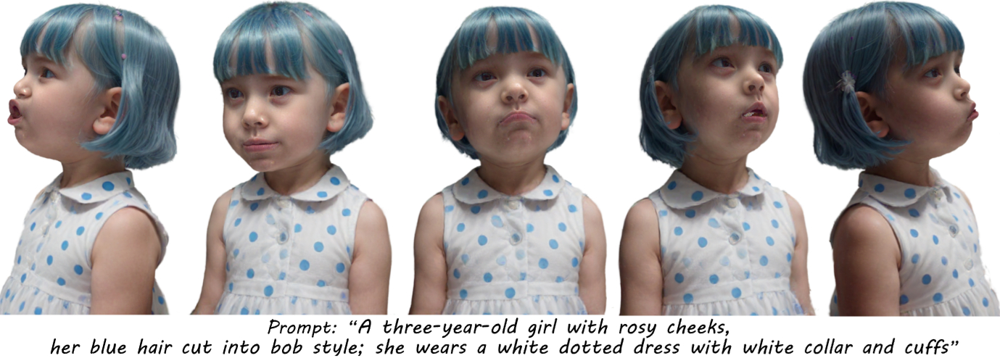
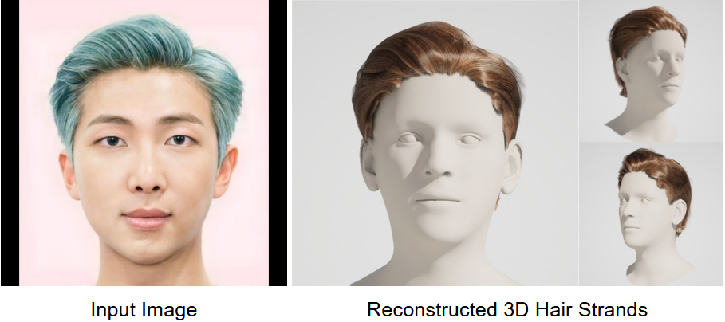
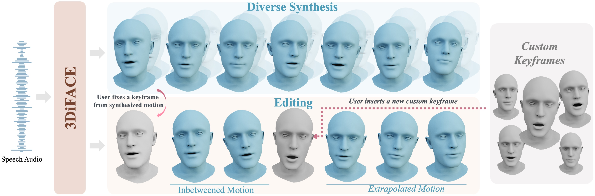
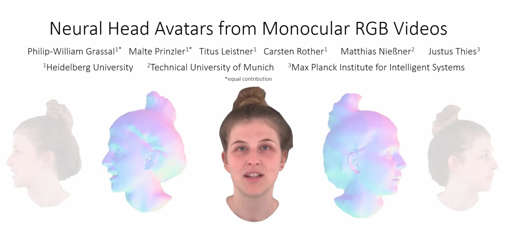
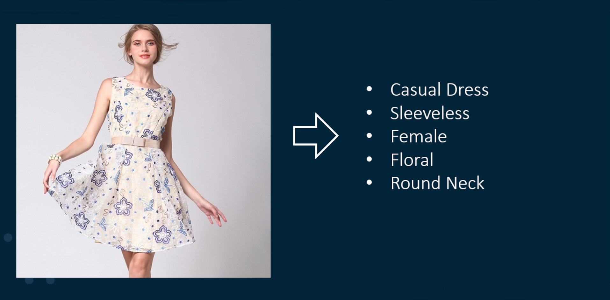

Malte Prinzler
Hi there,
I am a Ph.D. student with the Max Planck ETH Center for Learning Systems (CLS), supervised by Justus Thies (TU Darmstadt), Siyu Tang (ETH), and Otmar Hilliges (ETH).
My research focuses on reconstructing photo-realistic 3D avatars of the human head with affordable capturing hardware.
Such technology will be a crucial step towards next-gen telecommunication and entertainment, e.g., in immersive 3D video-conferencing and VR gaming.
From February 2025 until April 2026, I joined the Syntec team within Google Android XR lead by Thabo Beeler as a student researcher to work on the reconstruction and registration of photo-realistic 3D human heads from studio captures.
Before my Ph.D., I obtained a Master's Degree in Physics from Heidelberg University and studied at the Manning College of Information and Computer Sciences at the University of Massachusetts, Amherst, USA under the supervision of Prof. Erik G. Learned-Miller.
Further, I worked as a Machine Learning Intern at SAS Institue.
If you'd like to have a chat, feel free to get in touch:
PROJECTS
MATCH: Feed-forward Gaussian Registration for Head Avatar Creation and Editing
Malte Prinzler, Paulo Gotardo, Siyu Tang, Timo Bolkart
CVPR 2026
Given calibrated multi-view images, MATCH infers static Gaussian splat textures in 0.5 seconds. The resulting Gaussians are in dense semantic correspondence across subjects and expressions. This allows for various applications such as editing, expression transfer, and fast avatar optimization.
Joker: Conditional 3D Head Synthesis with Extreme Facial Expressions
Malte Prinzler, Egor Zakharov, Vanessa Slyarova, Berna Kabadayi, Justus Thies
3DV 2025
Joker uses one reference image to generate a 3D reconstruction with a novel extreme expression. The target expression is defined through 3DMM parameters and text prompts. The text prompts effectively resolve ambiguities in the 3DMM input and can control emotion-related expression subtleties and tongue articulation.

AnimPortrait3D: Text-based Animatable 3D Avatars with Morphable Model Alignment
Yiqian Wu, Malte Prinzler, Xiaogang Jin, Siyu Tang
Siggraph 2025
AnimPortrait3D creates animatable 3D avatars from text descriptions, achieving realistic appearance and geometry while maintaining accurate alignment with the underlying parametric mesh. Prompt: "A 40-year-old gentleman with a chiseled jawline, slightly graying hair slicked back into a neat undercut, dressed in a navy pinstriped suit, a red tie complementing his fair complexion - confidently walking through a bustling city street".

Im2Haircut: Single-view Strand-based Hair Reconstruction for Human Avatars
Vanessa Sklyarova, Egor Zakharov, Malte Prinzler, Giorgio Becherini, Michael Black, Justus Thies
ICCV 2025
Given a single image, Im2Haircut generates high-quality, strand-based 3D hair geometry. Method consists of a prior hair geometry model trained on a mixture of synthetic and real data that is finetuned using the input image at inference time.

3DiFACE: Synthesizing and Editing Holistic 3D Facial Animation
Balamurugan Thambiraja, Malte Prinzler, Sadegh Aliakbarian, Darren Cosker, Justus Thies
3DV 2025
3DiFACE is a novel diffusion-based method for synthesizing and editing holistic 3D facial animation from an audio sequence, wherein one can synthesize a diverse set of facial animations (top), seamlessly edit facial animations between two or multiple user-specified keyframes, and extrapolating motion from past motion (bottom).
DINER: Depth-aware Image-based NEural Radiance fields
Malte Prinzler, Otmar Hilliges, Justus Thies
CVPR 2023
Based on sparse input views, we predict depth and feature maps to infer a volumetric scene representation in terms of a radiance field which enables novel viewpoint synthesis. The depth information allows us to use input views with high relative distance such that the scene can be captured more completely and with higher synthesis quality compared to previous state-of-the-art methods.

Neural Head Avatars from Monocular RGB Videos
Philip-William Grassal*, Malte Prinzler*, Titus Leistner, Carsten Rother, Matthias Nießner, Justus Thies (*equal contribution)
CVPR 2022
Given a monocular portrait video of a person, we reconstruct a Neural Head Avatar. Such a 4D avatar will be the foundation of applications like teleconferencing in VR/AR, since it enables novel-view synthesis and control over pose and expression.

Visual Fashion Attribute Prediction
Internship project on vision-based regression of descriptive features for apparel products. Given an image of a garment, a 2D convolutional network extracts scores for a predefined set of attributes. This allows for attribute-based product similarity matching and recommendation applications.
EXPERIENCE
Student Researcher
Google Zürich
Feb 2025 - August 2025 & Oct 2025 - Apr 2026 (12 months)
I joined the Syntec team within Android XR to work on the reconstruction and registration of photo-realistic 3D human heads from studio captures. Please refer to our publication paper for more details.
Head Teaching Assistant, Computer Vision
ETH Zürich
Aug 2025 - Feb 2026
I served as the head teaching assistant for the ETH master's lecture Computer Vision.
Presenter
Computer Vision and Pattern Recognition Conference (CVPR)
Jun 2023
I presented our paper DINER: Depth-aware Neural Radiance Fields.
Speaker
Rank Prize Symposium on Neural Rendering in Computer Vision
Aug 2022
I presented and discussed cutting-edge research on Neural Rendering in Computer Vision together with top-of-the-field researchers, among them Ben Mildenhall, Vladlen Koltun, Andrea Vedaldi, Vincent Sitzmann, Siyu Tang, Matthias Nießner, Justus Thies, and Jamie Shotton.
Presenter
Computer Vision and Pattern Recognition Conference (CVPR)
Jun 2022
I presented the paper Neural Head Avatars from Monocular RGB Videos.
EDUCATION
Ph.D. Student, Machine Learning
Max Planck ETH Center for Learning Systems (CLS)
Since Mar 2022
Co-supervised by Justus Thies (TU Darmstadt), Siyu Tang (ETH), and Otmar Hilliges (ETH), my research focuses on reconstructing photo-realistic 3D avatars of the human head based on affordable capturing hardware.
Exchange Research Student
University of Massachusetts, Amherst, USA
Sep 2019 - May 2020
Average Grade: 1.0 (4.0 GPA)
Graduate Student Exchange. I attended lectures on Natural Language Processing, Reinforcement Learning, and Quantum Computing. Further, I conducted research under the supervision of Erik G. Learned-Miller.